Análisis de ventas de autos usados


Objetivos
Limpiar datos nulos, descubrir y arreglar inconsistencias de precios, borrar tablas innecesarias y dejar el dataset listo para su uso en Power BI.
Carga, limpieza y modelado
Se importan las librerías principales que se usarán para análisis de datos y visualización.
Utilizo pandas para la manipulación y análisis de datos y
matplotlib.pyplot y seaborn para crear gráficos y visualizaciones.
Descargo el conjunto de datos directamente desde Kaggle usando la librería kagglehub.
Cargo el archivo CSV del dataset en un DataFrame de pandas
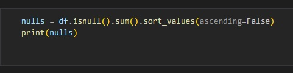
Identifico las columnas con valores nulos y cuento cuántos hay en cada una.
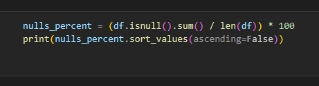
Calculé el porcentaje de datos faltantes por columna. Esto me permitió priorizar la limpieza de las columnas con mayor porcentaje de nulos.
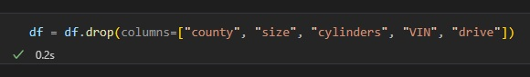
Eliminé las columnas que contenían más de 40% de datos nulos.
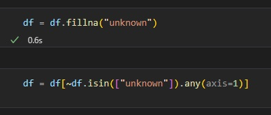
Reemplazé los datos nulos restantes por "unknown". Se pueden hacer análisis con datos desconocidos pero no con nulos.
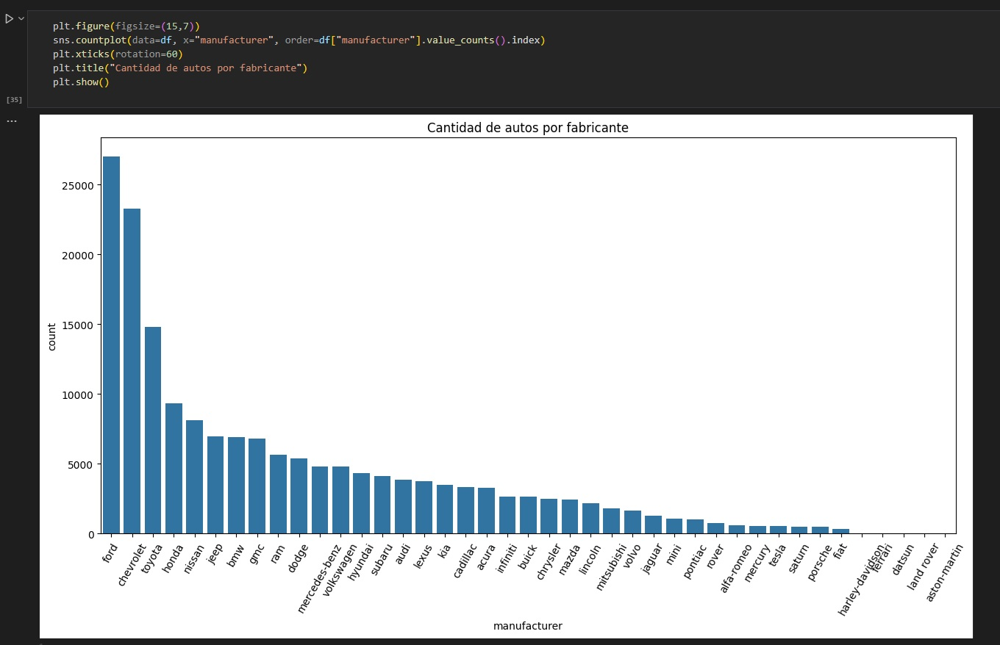
Con matplotlib y seaborn elaboré diferentes gráficos para detectar errores de manera más sencilla. En este caso anteriormente los números eran el doble, pero al borrar todos los datos nulos, la cantidad bajó significativamente.
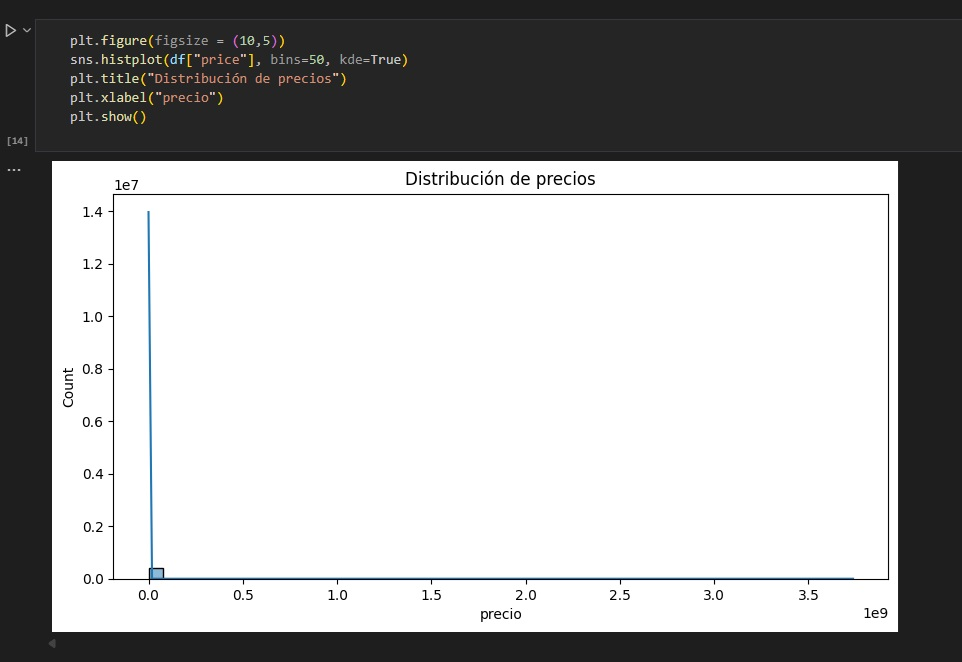
Al realizar este gráfico noté que el resutlado no era normal. La alta escala daba a entender que en el dataset habían precios estratosféricos los cuales había que borrar.
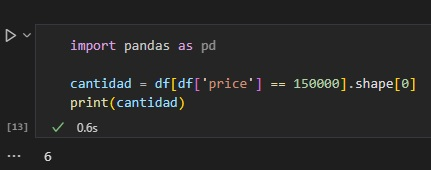 Al ver que entre el rango de 140.000/150.000 solamente habían seis automóviles, decidí borrar todas las filas con precios mayores a 150.000.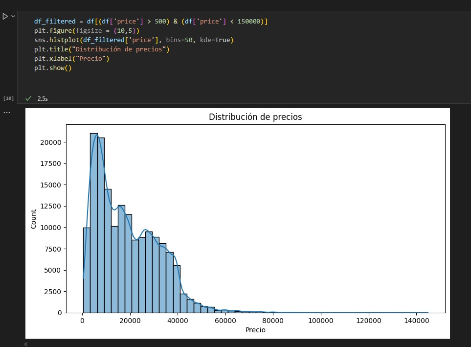
Ahora tengo un gráfico de distribución de precios con buenas proporciones.
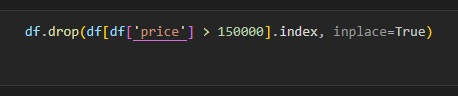
Traigo un informe creado en Looker Studio y utilizando Google Sheets
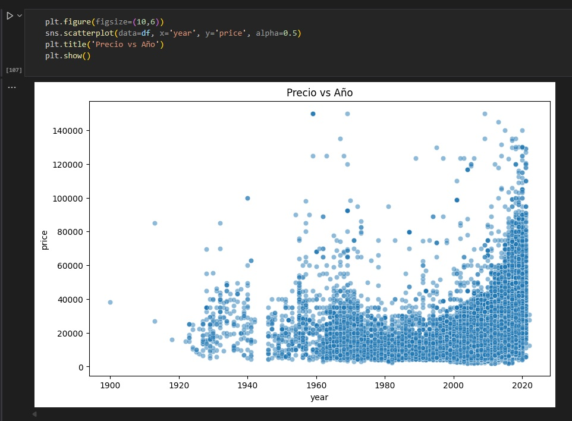
Traigo un informe creado en Looker Studio y utilizando Google Sheets
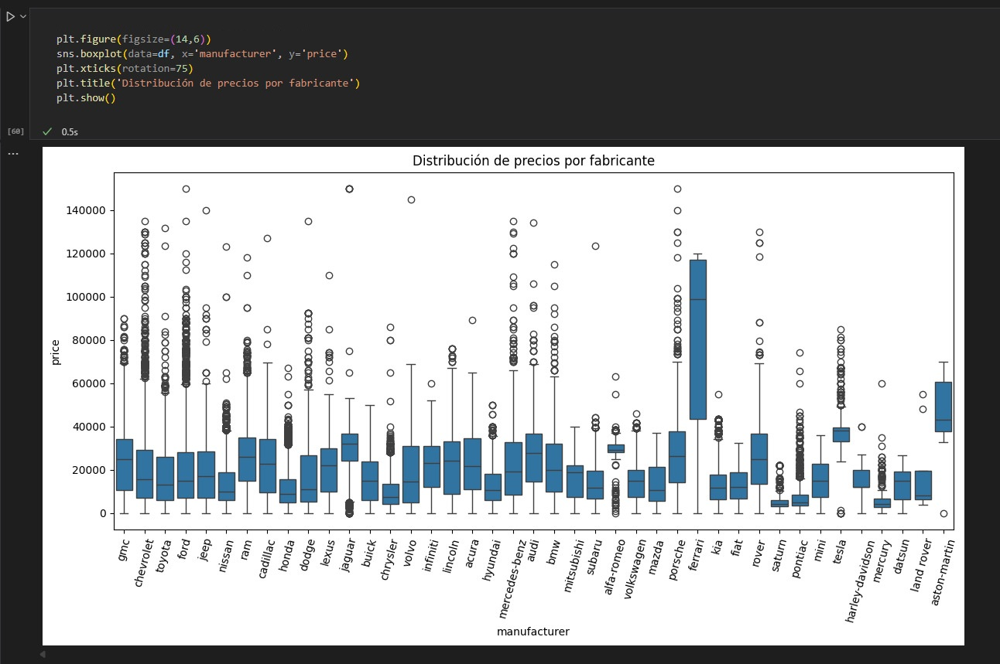
Traigo un informe creado en Looker Studio y utilizando Google Sheets
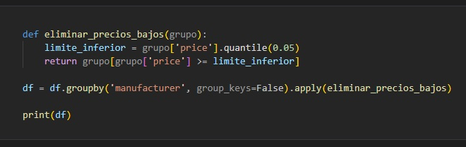
Traigo un informe creado en Looker Studio y utilizando Google Sheets
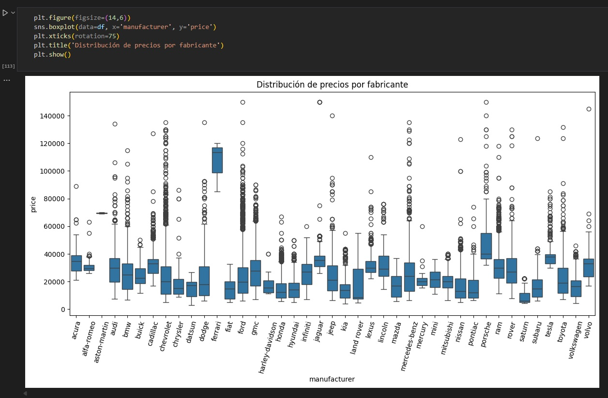
Traigo un informe creado en Looker Studio y utilizando Google Sheets